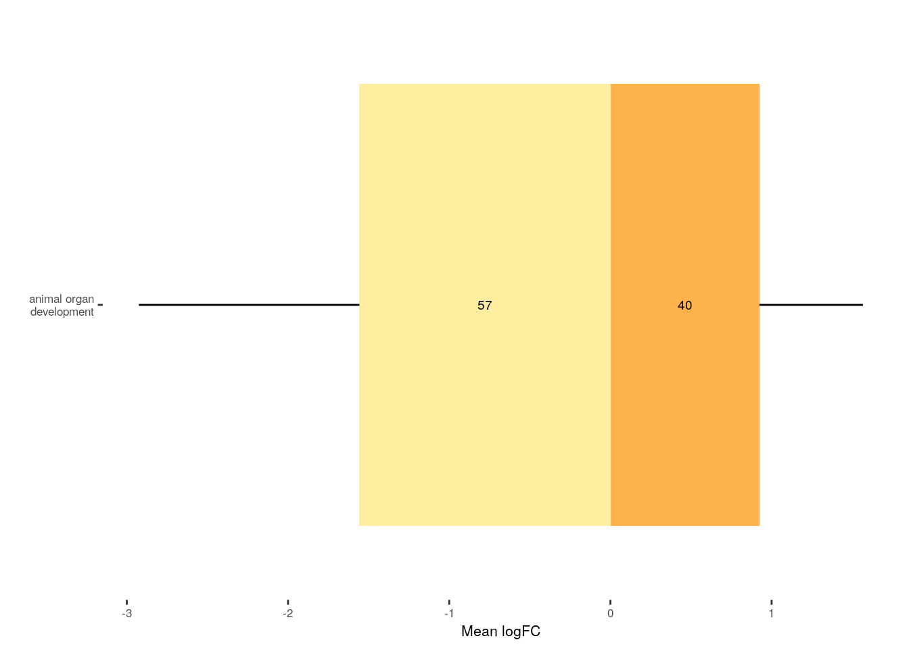

in vivo
Last updated: 2025-09-02
Checks: 6 1
Knit directory: invitro/
This reproducible R Markdown analysis was created with workflowr (version 1.7.1). The Checks tab describes the reproducibility checks that were applied when the results were created. The Past versions tab lists the development history.
Great! Since the R Markdown file has been committed to the Git repository, you know the exact version of the code that produced these results.
Great job! The global environment was empty. Objects defined in the global environment can affect the analysis in your R Markdown file in unknown ways. For reproduciblity it’s best to always run the code in an empty environment.
The command set.seed(20250827) was run prior to running the code in the R Markdown file. Setting a seed ensures that any results that rely on randomness, e.g. subsampling or permutations, are reproducible.
Great job! Recording the operating system, R version, and package versions is critical for reproducibility.
Nice! There were no cached chunks for this analysis, so you can be confident that you successfully produced the results during this run.
Using absolute paths to the files within your workflowr project makes it difficult for you and others to run your code on a different machine. Change the absolute path(s) below to the suggested relative path(s) to make your code more reproducible.
| absolute | relative |
|---|---|
| /workspaces/invitro/invitro/data/ | data |
Great! You are using Git for version control. Tracking code development and connecting the code version to the results is critical for reproducibility.
The results in this page were generated with repository version 2bba159. See the Past versions tab to see a history of the changes made to the R Markdown and HTML files.
Note that you need to be careful to ensure that all relevant files for the analysis have been committed to Git prior to generating the results (you can use wflow_publish or wflow_git_commit). workflowr only checks the R Markdown file, but you know if there are other scripts or data files that it depends on. Below is the status of the Git repository when the results were generated:
Untracked files:
Untracked: analysis/at1_at2.Rmd
Untracked: code/cell_cycle.r
Untracked: code/common_genes.r
Untracked: code/deg_plots.r
Untracked: code/invivo.r
Untracked: code/single_cell.r
Untracked: code/unique_genes.r
Untracked: data/220427_ATII_embedding.rds
Untracked: data/220427_EC_embedding.rds
Untracked: data/220427_MFB_embedding.rds
Untracked: data/Count.matrix.xls
Untracked: data/G1S.txt
Untracked: data/G2M.txt
Untracked: data/Hyperoxia_AT.xls
Untracked: data/Hyperoxia_EC.xls
Untracked: data/Hyperoxia_MFB.xls
Untracked: data/bulk_seurat_endothelial.rds
Untracked: data/bulk_seurat_epithelial.rds
Untracked: data/bulk_seurat_stroma.rds
Untracked: data/inVivo_hyperoxia.txt
Untracked: data/inVivo_hyperoxia.xlsx
Untracked: data/samplesheet.txt
Untracked: et(frame,nsets = 20, nintersects = 15,
Unstaged changes:
Modified: README.md
Modified: _workflowr.yml
Modified: analysis/_site.yml
Modified: data/README.md
Modified: invitro.Rproj
Note that any generated files, e.g. HTML, png, CSS, etc., are not included in this status report because it is ok for generated content to have uncommitted changes.
These are the previous versions of the repository in which changes were made to the R Markdown (analysis/invivo.Rmd) and HTML (docs/invivo.html) files. If you’ve configured a remote Git repository (see ?wflow_git_remote), click on the hyperlinks in the table below to view the files as they were in that past version.
| File | Version | Author | Date | Message |
|---|---|---|---|---|
| Rmd | 2bba159 | jdhenaos | 2025-09-02 | workflowr::wflow_publish(“analysis/invivo.Rmd”) |
library(biomaRt)
library(gprofiler2)
library(ggplot2)
library(RColorBrewer)
library(GO.db)Loading required package: AnnotationDbiLoading required package: stats4Loading required package: BiocGenerics
Attaching package: 'BiocGenerics'The following objects are masked from 'package:stats':
IQR, mad, sd, var, xtabsThe following objects are masked from 'package:base':
anyDuplicated, aperm, append, as.data.frame, basename, cbind,
colnames, dirname, do.call, duplicated, eval, evalq, Filter, Find,
get, grep, grepl, intersect, is.unsorted, lapply, Map, mapply,
match, mget, order, paste, pmax, pmax.int, pmin, pmin.int,
Position, rank, rbind, Reduce, rownames, sapply, saveRDS, setdiff,
table, tapply, union, unique, unsplit, which.max, which.minLoading required package: BiobaseWelcome to Bioconductor
Vignettes contain introductory material; view with
'browseVignettes()'. To cite Bioconductor, see
'citation("Biobase")', and for packages 'citation("pkgname")'.Loading required package: IRangesLoading required package: S4Vectors
Attaching package: 'S4Vectors'The following object is masked from 'package:utils':
findMatchesThe following objects are masked from 'package:base':
expand.grid, I, unnamelibrary(UpSetR)
set_base_url("https://biit.cs.ut.ee/gprofiler_archive3/e102_eg49_p15")
FCplotter = function(pathways, DEG){
# data is the dataframe containing only significant genes for a specific cell type
# pathway is a df of pathway ids/go ids that are statistically enriched from geneprofile
to.plot <- data.frame()
for(i in 1:nrow(pathways)){
res = gost(query = pathways[i,"term_id"], organism = "mmusculus")
gene_set = res$meta$genes_metadata$query$query_1$ensgs
to.plot <- rbind(to.plot,
data.frame(
Name=pathways[i,"term_name"],
mean_FC=c(mean(DEG[DEG$ensembl_gene_id %in% gene_set,]$log2FoldChange[DEG[DEG$ensembl_gene_id %in% gene_set,]$log2FoldChange > 0]),
mean(DEG[DEG$ensembl_gene_id %in% gene_set,]$log2FoldChange[DEG[DEG$ensembl_gene_id %in% gene_set,]$log2FoldChange < 0])),
Type=c("up-regulated","down-regulated"),
Set_size = c(length(DEG[DEG$ensembl_gene_id %in% gene_set,]$log2FoldChange[DEG[DEG$ensembl_gene_id %in% gene_set,]$log2FoldChange > 0]),
length(DEG[DEG$ensembl_gene_id %in% gene_set,]$log2FoldChange[DEG[DEG$ensembl_gene_id %in% gene_set,]$log2FoldChange < 0])),
SD=c(sd(DEG[DEG$ensembl_gene_id %in% gene_set,]$log2FoldChange[DEG[DEG$ensembl_gene_id %in% gene_set,]$log2FoldChange > 0]),
sd(DEG[DEG$ensembl_gene_id %in% gene_set,]$log2FoldChange[DEG[DEG$ensembl_gene_id %in% gene_set,]$log2FoldChange < 0]))
))
}
to.plot[is.nan(to.plot$mean_FC),"mean_FC"] <- 0
return(to.plot)
}
enrichment_profile = function(pathways, DEG, color_down, color_up){
# data is the dataframe containing only significant genes for a specific cell type
# pathway is a df of pathway ids/go ids that are statistically enriched from geneprofile
to.plot <- data.frame()
for(i in 1:nrow(pathways)){
res = gost(query = pathways[i,"term_id"], organism = "mmusculus")
gene_set = res$meta$genes_metadata$query$query_1$ensgs
to.plot <- rbind(to.plot,
data.frame(
Name=pathways[i,"term_name"],
mean_FC=c(mean(DEG[DEG$ensembl_gene_id %in% gene_set,]$log2FoldChange[DEG[DEG$ensembl_gene_id %in% gene_set,]$log2FoldChange > 0]),
mean(DEG[DEG$ensembl_gene_id %in% gene_set,]$log2FoldChange[DEG[DEG$ensembl_gene_id %in% gene_set,]$log2FoldChange < 0])),
Type=c("up-regulated","down-regulated"),
Set_size = c(length(DEG[DEG$ensembl_gene_id %in% gene_set,]$log2FoldChange[DEG[DEG$ensembl_gene_id %in% gene_set,]$log2FoldChange > 0]),
length(DEG[DEG$ensembl_gene_id %in% gene_set,]$log2FoldChange[DEG[DEG$ensembl_gene_id %in% gene_set,]$log2FoldChange < 0])),
SD=c(sd(DEG[DEG$ensembl_gene_id %in% gene_set,]$log2FoldChange[DEG[DEG$ensembl_gene_id %in% gene_set,]$log2FoldChange > 0]),
sd(DEG[DEG$ensembl_gene_id %in% gene_set,]$log2FoldChange[DEG[DEG$ensembl_gene_id %in% gene_set,]$log2FoldChange < 0]))
))
}
to.plot[is.nan(to.plot$mean_FC),"mean_FC"] <- 0
p <- ggplot(to.plot, aes(x = mean_FC, y = reorder(Name, abs(mean_FC)), fill = Type, label = Set_size)) +
scale_fill_manual(name = "", values = c("down-regulated" = color_down, "up-regulated" = color_up)) +
ylab("") + xlab("Mean logFC") +
theme(axis.line = element_blank(),
panel.grid.major = element_blank(),
panel.grid.minor = element_blank(),
panel.background = element_blank()) + theme(text = element_text(size = 7)) +
theme(legend.position = "none") +
geom_bar(stat = "identity") + geom_text(size = 2, position = position_stack(vjust = 0.5)) +
geom_linerange(aes(xmin=ifelse(mean_FC < 0,mean_FC - SD, mean_FC), xmax=ifelse(mean_FC > 0,mean_FC + SD, mean_FC) ))
return(p)
}
data.folder <- "/workspaces/invitro/invitro/data/"
raw.AT <- read.table(paste0(data.folder,"Hyperoxia_AT.xls"),sep = "\t",header = T,stringsAsFactors = F)
DEG.AT <- raw.AT[which(raw.AT$padj < 0.05),]
raw.EC <- read.table(paste0(data.folder,"Hyperoxia_EC.xls"),sep = "\t",header = T,stringsAsFactors = F)
DEG.EC <- raw.EC[which(raw.EC$padj < 0.05),]
raw.MFB <- read.table(paste0(data.folder,"Hyperoxia_MFB.xls"),sep = "\t",header = T,stringsAsFactors = F)
DEG.MFB <- raw.MFB[which(raw.MFB$padj < 0.05),]
raw.IVC <- read.table(paste0(data.folder,"inVivo_hyperoxia.txt"),sep = "\t",header = T,stringsAsFactors = F)
DEG.IVC <- raw.IVC[which(raw.IVC$padj < 0.05),]
AT.gost <- gost(DEG.AT$ensembl_gene_id,organism = "mmusculus",sources=c("GO:MF", "GO:BP","GO:CC", "KEGG"))
AT.BP <- AT.gost$result[AT.gost$result$source == "GO:BP",c("term_id", "source", "term_name", "p_value", "query_size", "term_size", "intersection_size")]
EC.gost <- gost(DEG.EC$ensembl_gene_id,organism = "mmusculus",sources=c("GO:MF", "GO:BP","GO:CC", "KEGG"))
EC.BP <- EC.gost$result[EC.gost$result$source == "GO:BP",c("term_id", "source", "term_name", "p_value", "query_size", "term_size", "intersection_size")]
MFB.gost <- gost(DEG.MFB$ensembl_gene_id,organism = "mmusculus",sources=c("GO:MF", "GO:BP","GO:CC", "KEGG"))
MFB.BP <- MFB.gost$result[MFB.gost$result$source == "GO:BP",c("term_id", "source", "term_name", "p_value", "query_size", "term_size", "intersection_size")]
IVC.gost <- gost(DEG.IVC$ensembl_gene_id,organism = "mmusculus",sources=c("GO:MF", "GO:BP","GO:CC", "KEGG"))
IVC.BP <- IVC.gost$result[IVC.gost$result$source == "GO:BP",c("term_id", "source", "term_name", "p_value", "query_size", "term_size", "intersection_size")]
AT.dev <- AT.BP[grep(pattern = "develop",x = AT.BP$term_name),]
EC.dev <- EC.BP[grep(pattern = "develop",x = EC.BP$term_name),]
MFB.dev <- MFB.BP[grep(pattern = "develop",x = MFB.BP$term_name),]
IVC.dev <- IVC.BP[grep(pattern = "develop",x = IVC.BP$term_name),]Plots
Upset plot
frame <- fromList(list(IVC.dev$term_id,
EC.dev$term_id,
MFB.dev$term_id,
AT.dev$term_id))
colnames(frame) <- c(paste0("in vivo Hyperoxia"," (N = ",nrow(IVC.dev),")"),
paste0("EC Hyperoxia"," (N = ",nrow(EC.dev),")"),
paste0("MFB Hyperoxia"," (N = ",nrow(MFB.dev),")"),
paste0("AT1/2 Hyperoxia"," (N = ",nrow(AT.dev),")"))
#pdf(file = "~/Documents/230516_hyperoxia/240110_common_development_paths/240110_upsetplot.pdf",width = 7/2.54,height = 6/2.54)
upset(frame,nsets = 20, nintersects = 15,
text.scale = 1,
point.size = 1,
line.size = 0.3,
order.by = c("freq"),empty.intersections = NULL,
queries = list(list(query = intersects,
params = list("AT1/2 Hyperoxia (N = 9)","in vivo Hyperoxia (N = 17)"),
color = '#44AA99', active = T),
list(query = intersects,
params = list("EC Hyperoxia (N = 8)","in vivo Hyperoxia (N = 17)"),
color = '#117733', active = T),
list(query = intersects,
params = list("AT1/2 Hyperoxia (N = 9)","in vivo Hyperoxia (N = 17)","EC Hyperoxia (N = 8)"),
color = '#332288', active = T)),
sets.bar.color = c("#ffeda0","#A79AD4","#DF758C","#ACD49F"),
sets = colnames(frame),keep.order = T)
#dev.off()invivo + AT1/2
AT.dev$term_name[1] <- "animal organ\ndevelopment"
IVC.dev$term_name[1] <- "animal organ\ndevelopment"
enrichment_profile(pathways = AT.dev[which(AT.dev$term_id %in% IVC.dev$term_id & !AT.dev$term_id %in% EC.dev$term_id),],DEG = DEG.AT,color_down = "#ACD49F",color_up = "#008F00")#ggsave(filename = "~/Documents/230516_hyperoxia/240110_common_development_paths/240110_invivo_AT/240110_AT.pdf",plot = p,width = 7,height = 3, units = "cm")
enrichment_profile(pathways = IVC.dev[which(IVC.dev$term_id %in% AT.dev$term_id & !IVC.dev$term_id %in% EC.dev$term_id),],DEG = DEG.IVC,color_down = "#ffeda0",color_up = "#feb24c")#ggsave(filename = "~/Documents/230516_hyperoxia/240110_common_development_paths/240110_invivo_AT/240110_invivo.pdf",plot = p,width = 7,height = 3, units = "cm")invivo + EC
EC.dev$term_name[c(1,7,8)] <- c("circulatory system\ndevelopment","regulation of\ndevelopmental process","anatomical structure\ndevelopment")
IVC.dev$term_name[c(4,5,10)] <- c("anatomical structure\ndevelopment","circulatory system\ndevelopment","regulation of\ndevelopmental process")
enrichment_profile(pathways = EC.dev[which(EC.dev$term_id %in% IVC.dev$term_id & !EC.dev$term_id %in% AT.dev$term_id),],DEG = DEG.EC,color_down = "#A79AD4",color_up = "#7030A0")#ggsave(filename = "~/Documents/230516_hyperoxia/240110_common_development_paths/240110_invivo_EC/240110_EC.pdf",plot = p,width = 7,height = 3, units = "cm")
enrichment_profile(pathways = IVC.dev[which(IVC.dev$term_id %in% EC.dev$term_id & !IVC.dev$term_id %in% AT.dev$term_id),],DEG = DEG.IVC,color_down = "#ffeda0",color_up = "#feb24c")
#ggsave(filename = "~/Documents/230516_hyperoxia/240110_common_development_paths/240110_invivo_EC/240110_invivo.pdf",plot = p,width = 7,height = 3, units = "cm")invivo + AT1/2 + EC
AT.dev$term_name[c(6,8)] <- c("multicellular organism\ndevelopment","system\ndevelopment")
EC.dev$term_name[c(5,6)] <- c("multicellular organism\ndevelopment","system\ndevelopment")
IVC.dev$term_name[c(2,3)] <- c("system\ndevelopment","multicellular organism\ndevelopment")
enrichment_profile(pathways = AT.dev[which(AT.dev$term_id %in% IVC.dev$term_id & AT.dev$term_id %in% EC.dev$term_id),],DEG = DEG.AT,color_down = "#ACD49F",color_up = "#008F00")#ggsave(filename = "~/Documents/230516_hyperoxia/240110_common_development_paths/240110_invivo_AT_EC/240110_AT.pdf",plot = p,width = 7,height = 2, units = "cm")
enrichment_profile(pathways = EC.dev[which(EC.dev$term_id %in% IVC.dev$term_id & EC.dev$term_id %in% AT.dev$term_id),],DEG = DEG.EC,color_down = "#A79AD4",color_up = "#7030A0")#ggsave(filename = "~/Documents/230516_hyperoxia/240110_common_development_paths/240110_invivo_AT_EC/240110_EC.pdf",plot = p,width = 7,height = 2, units = "cm")
enrichment_profile(pathways = IVC.dev[which(IVC.dev$term_id %in% AT.dev$term_id & IVC.dev$term_id %in% EC.dev$term_id),],DEG = DEG.IVC,color_down = "#ffeda0",color_up = "#feb24c")#ggsave(filename = "~/Documents/230516_hyperoxia/240110_common_development_paths/240110_invivo_AT_EC/240110_invivo.pdf",plot = p,width = 7,height = 2, units = "cm")
sessionInfo()R version 4.4.0 (2024-04-24)
Platform: x86_64-pc-linux-gnu
Running under: Ubuntu 22.04.4 LTS
Matrix products: default
BLAS: /usr/lib/x86_64-linux-gnu/openblas-pthread/libblas.so.3
LAPACK: /usr/lib/x86_64-linux-gnu/openblas-pthread/libopenblasp-r0.3.20.so; LAPACK version 3.10.0
locale:
[1] LC_CTYPE=en_US.UTF-8 LC_NUMERIC=C
[3] LC_TIME=en_US.UTF-8 LC_COLLATE=en_US.UTF-8
[5] LC_MONETARY=en_US.UTF-8 LC_MESSAGES=en_US.UTF-8
[7] LC_PAPER=en_US.UTF-8 LC_NAME=C
[9] LC_ADDRESS=C LC_TELEPHONE=C
[11] LC_MEASUREMENT=en_US.UTF-8 LC_IDENTIFICATION=C
time zone: Etc/UTC
tzcode source: system (glibc)
attached base packages:
[1] stats4 stats graphics grDevices utils datasets methods
[8] base
other attached packages:
[1] UpSetR_1.4.0 GO.db_3.20.0 AnnotationDbi_1.68.0
[4] IRanges_2.40.1 S4Vectors_0.44.0 Biobase_2.66.0
[7] BiocGenerics_0.52.0 RColorBrewer_1.1-3 ggplot2_3.5.2
[10] gprofiler2_0.2.3 biomaRt_2.62.1 workflowr_1.7.1
loaded via a namespace (and not attached):
[1] tidyselect_1.2.1 viridisLite_0.4.2 dplyr_1.1.4
[4] farver_2.1.2 blob_1.2.4 bitops_1.0-9
[7] filelock_1.0.3 Biostrings_2.74.1 RCurl_1.98-1.14
[10] fastmap_1.2.0 lazyeval_0.2.2 BiocFileCache_2.14.0
[13] promises_1.3.3 digest_0.6.37 lifecycle_1.0.4
[16] processx_3.8.6 KEGGREST_1.46.0 RSQLite_2.3.7
[19] magrittr_2.0.3 compiler_4.4.0 rlang_1.1.6
[22] sass_0.4.10 progress_1.2.3 tools_4.4.0
[25] yaml_2.3.10 data.table_1.17.8 knitr_1.50
[28] labeling_0.4.3 prettyunits_1.2.0 htmlwidgets_1.6.4
[31] bit_4.0.5 curl_7.0.0 plyr_1.8.9
[34] xml2_1.4.0 withr_3.0.2 purrr_1.1.0
[37] grid_4.4.0 git2r_0.33.0 scales_1.4.0
[40] cli_3.6.5 rmarkdown_2.29 crayon_1.5.3
[43] generics_0.1.4 rstudioapi_0.17.1 httr_1.4.7
[46] DBI_1.2.3 cachem_1.1.0 stringr_1.5.1
[49] zlibbioc_1.52.0 XVector_0.46.0 vctrs_0.6.5
[52] jsonlite_2.0.0 callr_3.7.6 hms_1.1.3
[55] bit64_4.0.5 plotly_4.11.0 jquerylib_0.1.4
[58] tidyr_1.3.1 glue_1.8.0 ps_1.9.1
[61] stringi_1.8.7 gtable_0.3.6 later_1.4.4
[64] GenomeInfoDb_1.42.3 UCSC.utils_1.2.0 tibble_3.3.0
[67] pillar_1.11.0 rappdirs_0.3.3 htmltools_0.5.8.1
[70] GenomeInfoDbData_1.2.13 R6_2.6.1 dbplyr_2.5.0
[73] httr2_1.2.1 rprojroot_2.1.1 evaluate_1.0.4
[76] png_0.1-8 memoise_2.0.1 httpuv_1.6.16
[79] bslib_0.9.0 Rcpp_1.1.0 gridExtra_2.3
[82] whisker_0.4.1 xfun_0.53 fs_1.6.6
[85] getPass_0.2-4 pkgconfig_2.0.3